on a board of 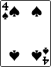, so you will make your flush on the river about 20% of the time. Your opponent bets $10 into a pot of $30. Should you call?
on a board of 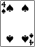, so you will make your flush on the river about 20% of the time. Your opponent bets $10 into a pot of $30. Should you call?Neal Wu
Preflop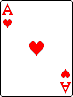 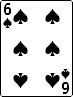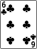
Neal Li
Flop Turn River
Bluffing is making a bet with a weak hand with the goal of having your opponent fold a hand better than yours. For example, if the board is the same as the one above:
And your hand is:
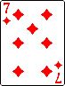Then your hand would benefit from bluffing both because it has almost no hope of winning the hand at showdown with 8-high and because there is a good chance that a strong bet will fold many hands better than yours, such as A-high or a weak pair.
Questions to discuss: when you are bluffing, how much should you bet? How do you know whether a bluff will be the best move (most profitable)?
Semi-bluffing is bluffing with significant equity--in other words, bluffing with a hand that still has a solid chance of winning, such as a straight draw or a flush draw.
Semi-bluffing is profitable because you have two ways to win the hand: first, by making your opponent fold (which is known as fold equity), and second, by making the best hand even when they call. This is also a great example of why aggression is critical in poker.
Let's say on the river you have a medium-strength hand like second pair on the board. The pot is $20, and your opponent bets $20. You think your opponent usually has a strong hand here but could be bluffing sometimes. How often do you need to be right in order to justify the call?
Another example: you are holding on a board of 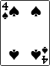, so you will make your flush on the river about 20% of the time. Your opponent bets $10 into a pot of $30. Should you call?
You are playing a $1/$2 game with a stack of $300 in front of you. Your opponent in early position raises to $6 with $300 as well, and you are on the button with . You know your opponent is very tight and will only make this raise with either AA or KK. What should you do?
Answer: call with the goal of playing a big pot when you hit another 3 on the flop.
Other examples (postflop):
onNote that both of these hands are draws to the nuts (the best hand possible), which is important because you can win a very large pot when your opponent improves to a second-best hand (such as a lower flush when you have the ace-high flush).
You're on the button with and everyone else has folded to you. The blinds are $1/$2. What should you do?
Answer: Raise. You can either steal the blinds or play a pot in position with a hand that has a large amount of potential (very similar to semi-bluffing).
The flop comes 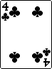 and your opponent checks to you. The pot is $13. What should you do?
Answer: Bet. You flopped virtually nothing, but in all likelihood your opponent also flopped nothing (on average, you will only make a pair on the flop 1/3 of the time).
Reverse implied odds is a term used to describe when you are drawing to hand that may still be second-best when you hit it. For example if a tight opponent raises from early position, and you find yourself in the blinds with  , you should typically fold the hand. Your opponent could have a hand like 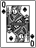, , or even , so even if you flop top pair of kings or jacks you have no way of knowing whether your hand is good.
, you should typically fold the hand. Your opponent could have a hand like 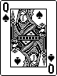, , or even , so even if you flop top pair of kings or jacks you have no way of knowing whether your hand is good.
Similar examples occur postflop: for example, drawing to a straight when there is also a flush draw on board, such as on . If you make your straight with the or the 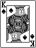, you could lose a big pot to someone holding a flush.
Position is key in poker. It allows you to bluff better, to value bet better, to play your draws better, to extract value out of your strong hands better; thus it allows you to play a wider range of starting hands.